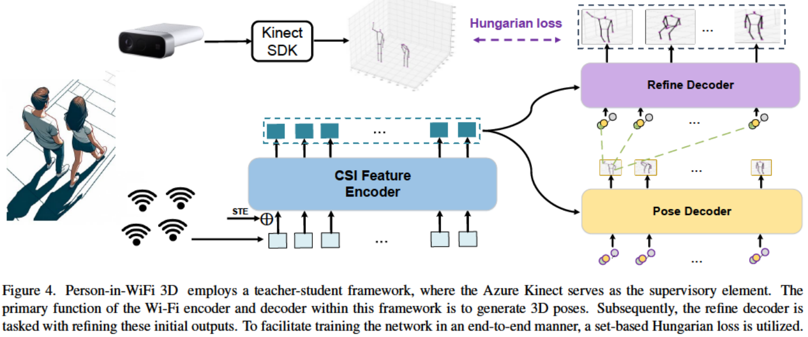
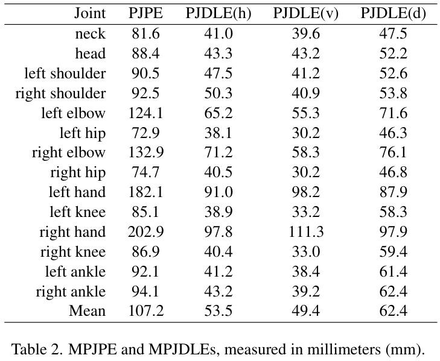
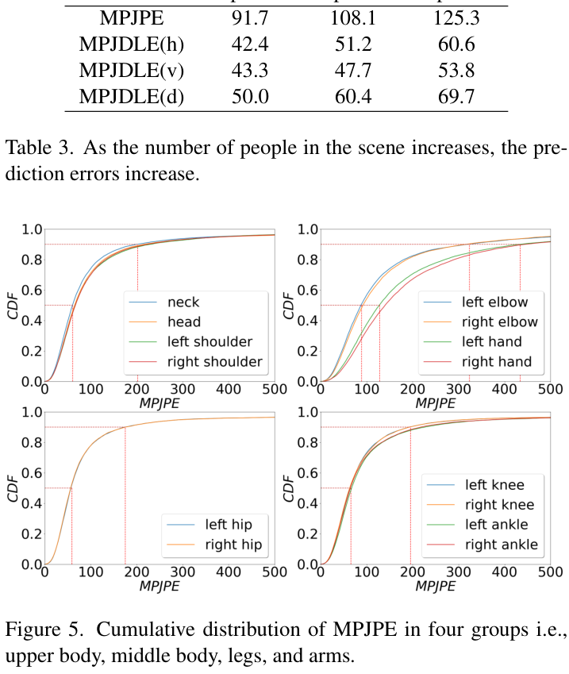
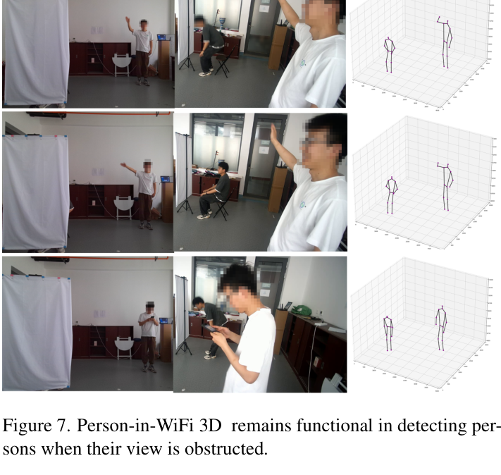

CVPR 2024
Publication
Person-in-WiFi 3D: End-to-End Multi-Person 3D Pose Estimation with Wi-Fi
Kangwei Yan (XJTU), Fei Wang (XJTU), Bo Qian (XJTU), Han Ding (XJTU), Jinsong Han (ZJU), Xing Wei (XJTU)
Person-in-WiFi 3D is an end-to-end Wi-Fi system for multi-person 3D pose estimation. It uses multiple commercial Wi-Fi receivers and a Transformer-style Wi-Fi Pose Transformer to directly predict a set of 3D human poses from CSI signals.
Wi-Fi 3D Pose Estimation
XJTU; ZJU
Overview
Person-in-WiFi 3D pushes Wi-Fi human sensing from single-person or 2D pose estimation toward multi-person 3D pose estimation. The system uses one Wi-Fi transmitter and three Wi-Fi receivers to capture richer spatial reflections from multiple people, then predicts 3D body keypoints in an end-to-end set prediction framework.
Compared with camera-based pose estimation, Wi-Fi sensing preserves privacy and can remain usable under occlusion or poor lighting. Compared with earlier Wi-Fi pose systems, this work avoids large 3D heatmaps and part affinity fields by using a Transformer-based model that directly maps CSI sequences to a set of 3D poses.
The paper reports the first Wi-Fi system for multi-person 3D pose estimation and releases a dataset with more than 97K Wi-Fi samples.
Main Contributions
- Introduces Person-in-WiFi 3D, a Wi-Fi-based system for multi-person 3D pose estimation.
- Proposes the Wi-Fi Pose Transformer, which converts CSI signals into multi-person 3D poses in an end-to-end manner.
- Uses a set-based Hungarian loss so each person's ground-truth pose is assigned to a unique prediction.
- Builds and releases a self-collected dataset with more than 97,000 Wi-Fi samples from 7 volunteers, 8 daily actions, and 3 indoor locations.
Technical Details
The data collection setup uses four ThinkPad X201 laptops with Intel 5300 network cards: one transmitter and three receivers. The transmitter broadcasts Wi-Fi at 5.64 GHz with 30 subcarriers, while the receivers capture CSI at 300 packets per second. An Azure Kinect records RGB-D videos at 15 FPS and provides supervisory 3D pose annotations through the Kinect Body Tracking SDK.
The model contains three main components:
- CSI Feature Encoder: tokenizes amplitude and denoised phase features and learns spatial-temporal CSI representations.
- Pose Decoder: uses learnable queries to regress a set of candidate 3D body poses and confidence scores.
- Refine Decoder: further refines initial pose predictions, inspired by PETR-style refinement.

Results
The dataset contains 456 RGB-D clips, 270,000 total video frames, and more than 97,000 cleaned Wi-Fi samples. It covers 1-4 people, 8 actions, and 3 indoor locations with different multipath conditions. After cleaning Kinect tracking failures, the final split includes 89,946 training samples and 7,824 testing samples.
Person-in-WiFi 3D reports 91.7 mm, 108.1 mm, and 125.3 mm MPJPE in 1-person, 2-person, and 3-person scenes, respectively. The overall mean MPJPE is 107.2 mm. The paper also reports that the system can run at 54 FPS, while avoiding the storage and post-processing burden of extending 2D heatmap-based Person-in-WiFi to 3D.


Occlusion and Limitations
The paper highlights that Wi-Fi can still detect people when the visual view is obstructed, which is important for privacy-sensitive and occluded indoor settings. It also reports two limitations: the upper-bound performance depends on Kinect annotation quality, and cross-environment generalization remains challenging because the system uses four distributed Wi-Fi transceivers whose spatial configuration changes across locations.

Resources
- PAMI journal extension
- Project Page
- CVF Open Access Paper
- Overview figure
- Architecture figure
- Main results table
{kind=link}
{kind=link}
{kind=link}
Citation
@inproceedings{yan2024personinwifi3d,
title = {Person-in-WiFi 3D: End-to-End Multi-Person 3D Pose Estimation with Wi-Fi},
author = {Yan, Kangwei and Wang, Fei and Qian, Bo and Ding, Han and Han, Jinsong and Wei, Xing},
booktitle = {Proceedings of the IEEE/CVF Conference on Computer Vision and Pattern Recognition (CVPR)},
pages = {969--978},
year = {2024}
}